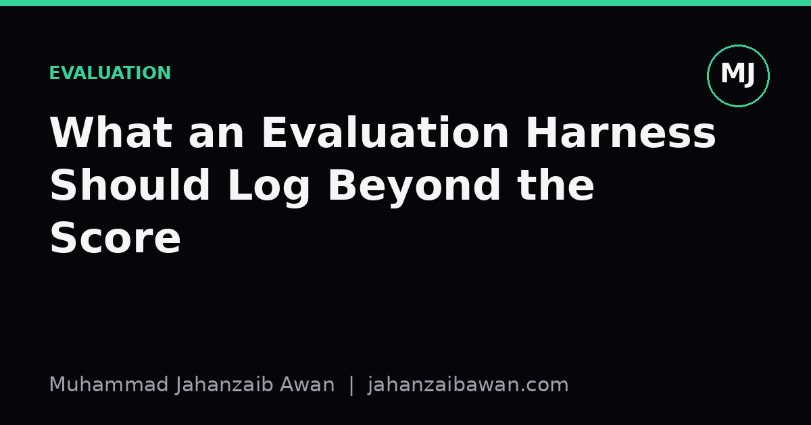

What an Evaluation Harness Should Log Beyond the Score
A single accuracy number tells you almost nothing about why a model works or when it will stop working. Here is what else deserves a line in your logs.

The score is the least informative number you will produce
When I run an evaluation, the final metric is the thing everyone asks for first, and it is also the thing that tells me the least. Suppose two models both score 82% accuracy on a classification task. That single figure says nothing about whether they fail on the same examples, whether the harder model is confidently wrong on the cases that matter most to a downstream user, or whether one of them is secretly relying on a shortcut that will not generalise. Two models can land on the same number through completely different routes, and if your harness only records the final score, you have thrown away the evidence that would let you tell those routes apart.
This matters more as soon as you start comparing runs over time, across teams, or across papers. A score without context is not reproducible in any meaningful sense. If someone reruns your evaluation six months later and gets 80% instead of 82%, you want to know within minutes whether that is noise, a data drift, a library version change, or a genuine regression. None of that is answerable from the headline number alone. The fix is not complicated, it just requires treating the evaluation harness as an instrument that records its own working, not a calculator that spits out one answer and discards the rest.
Per-example predictions and the shape of error
The single most useful thing to log is the full set of per-example predictions, alongside the ground truth, the input identifier, and the model's confidence or probability where available. This sounds obvious, but it is routinely skipped because it is tempting to just accumulate a running accuracy counter and discard each example once it has been scored. That is a mistake, because the aggregate hides the shape of the error distribution entirely.
Here is a concrete case. Imagine a binary classifier evaluated on 1,000 examples that scores 90% accuracy. That sounds solid until you log the per-example results and discover that 95 of the 100 errors are concentrated in a single subgroup that makes up only 15% of the dataset. Within that subgroup the real accuracy is closer to 60%. The aggregate number was arithmetically correct and practically misleading. You only find this by keeping the per-example record and being able to slice it by any metadata you care about afterwards, rather than deciding in advance which breakdowns matter.
Confidence scores add another layer. A model that is 90% accurate but wildly overconfident on its wrong answers is a different and more dangerous thing than a model that is 90% accurate and appropriately uncertain when it is wrong. Logging predicted probabilities lets you compute calibration after the fact, and calibration is often what separates a model you can safely gate with a threshold from one that will quietly surprise you in production.
Data lineage, versions, and the leakage you did not notice
A score is only meaningful relative to the exact data it was computed on, and data is not as stable as people assume. If your harness does not log the dataset version, the split hashes, and ideally a checksum of the evaluation file itself, you cannot be certain that a later comparison is apples to apples. I have seen leaderboard numbers quietly shift because someone fixed a labelling bug in the test set and nobody downstream knew which version of the file their reported score corresponded to.
Leakage is the sharper version of this problem. Suppose your training pipeline deduplicates near-identical examples before training but your evaluation set was built from an earlier snapshot of the same raw data pool. If even 3% of your test examples have a near-duplicate in the training set, your score is inflated by an amount that is very hard to detect after the fact unless you logged enough information to check. A good harness logs the split construction process itself, including the random seed, the filtering rules applied, and ideally a record of any overlap check that was run between train and test identifiers. This is tedious to set up once and saves you from publishing a number you later have to retract.
Environment matters too. Library versions, hardware, and even floating point non-determinism on GPUs can shift a score by a fraction of a percent, which is irrelevant until you are comparing two methods that differ by exactly that amount. Logging the environment is cheap insurance against chasing a difference that was never real.
Timing, cost, and the baseline you compared against
A score without a cost figure attached is an incomplete comparison. If model A scores two points higher than model B but takes four times as long to run inference, that is a real trade-off that the final metric hides entirely. Logging wall clock time, and ideally compute cost per example, turns your evaluation from a leaderboard entry into something a practitioner can actually use to make a decision.
Equally important, and equally often skipped, is logging what the baseline was and how it performed under identical conditions. A model that beats a strong, carefully tuned baseline by one point is a genuinely different result from a model that beats a weak or stale baseline by ten points. If your harness always runs the current best-known baseline alongside the candidate model, using the same data version and the same scoring code, the comparison becomes self-documenting. You never have to trust a number in isolation because the context that justifies it travels with it.
The practical takeaway is simple: treat your evaluation harness as a record-keeping system first and a scoring system second. Log every prediction, not just the aggregate. Log the exact data version and any overlap checks between splits. Log the environment and the cost. Run a baseline every time under the same conditions. None of this is glamorous work, but it is the difference between a number you can defend in six months and one you quietly hope nobody asks about.